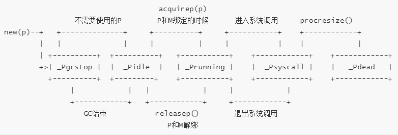

goroutine调度模型
golang最为人津津乐道的就是语言本身支持的轻量化协程能力–goroutine（突然发现，之前写的大部分博客第一句话都在表达这个意思）。go程序中主函数main以及GC和runtime都建立在goroutine的基础上，可见goroutine对golang而言，是多么的重要。
同时，由于goroutine是一个用户层轻量级的线程，对于操作系统内核而言，根本无法感知goroutine，所以goroutine的调度器也依赖golang自身实现。最主要的代码逻辑都在runtime包中。goroutine的调度器源码分析在雨痕的*《Go语言学习笔记》*中已做详细分析，本文仅从gopher角度，对golang的调度器模型做一下粗略介绍。
Goroutine调度器
基本概念
- M（machine）
系统线程。代表着真正的执行计算资源。
真正的调度系统执行者，绑定有效的P，获取P本地队列中的G，切换到G的执行栈执行G的函数
- P（processor）
逻辑处理器。M的执行上下文。
维护各种G对象队列、链表、cache和状态
- G（goroutine）
调度系统的最小单位，存储stack信息，状态和任务
对G而言，P就像它的”CPU“
总体而言，goroutine的调度可以概括为：runtime准备好G、M和P后，将M绑定P，获取到P队列中的G，切换到G的执行栈上执行G的任务。再调用goexit做清理工作，再返回M，循环往复。
实现模型
+-------+ +-------+
| KSE | | KSE |
+-------+ +-------+
| | 内核空间
- - - - - - - - - - - - - - - - - - - - - - - - - - - - - - - - - - - -
| | 用户空间
+-------+ +-------+
| M | | M |
+-------+ +-------+
| | | |
+------+ +------+ +------+ +------+
| P | | P | | P | | P |
+------+ +------+ +------+ +------+
| | | | | | | | |
+---+ +---+ +---+ +---+ +---+ +---+ +---+ +---+ +---+
| G | | G | | G | | G | | G | | G | | G | | G | | G |
+---+ +---+ +---+ +---+ +---+ +---+ +---+ +---+ +---+
引用自Go并发编程实战
-
KSE： Kernel Scheduling Entity ，内核调度实体
-
M、P和G都是动态关联，并不绑定。
1. go func() 语句创建G。
2. 将G放入P的本地队列（或者平衡到全局全局队列）。
3. 唤醒或新建M来执行任务。
4. 进入调度循环
5. 尽力获取可执行的G，并执行
6. 清理现场并且重新进入调度循环
引自golang源码剖析
GPM的生命周期
//src/runtime/runtime2.go
type g struct {
stack stack // offset known to runtime/cgo
sched gobuf
goid int64
m *m // current m; offset known to arm liblink
gopc uintptr // pc of go statement that created this goroutine
startpc uintptr // pc of goroutine function
... ...
}
type p struct {
lock mutex
id int32
status uint32 // one of pidle/prunning/...
m muintptr // back-link to associated m (nil if idle)
mcache *mcache
racectx uintptr
// Queue of runnable goroutines. Accessed without lock.
runqhead uint32
runqtail uint32
runq [256]guintptr
runnext guintptr
// Available G's (status == Gdead)
gfree struct {
gList
n int32
}
... ...
}
type m struct {
g0 *g // goroutine with scheduling stack
mstartfn func()
p puintptr // attached p for executing go code (nil if not executing go code)
curg *g // current running goroutine
nextp puintptr
oldp puintptr // the p that was attached before executing a syscall
......
}
可以看到，在g中定义了goroutine的堆栈stack，绑定的M对象m；在p中定义了goroutine queue runq（顺便一提，由于runq的最大长度为256，即单个p中最多只能存储256个待调度的G对象），关联的M对象m；在m中定义了当前和当前正在执行的g和当前绑定的p以及之前和未来绑定的p。
调度器的初始化
GoSchedule的入口放在runtime/asm_amd64.s文件中。
// 从系统线程的栈分出一部分当作g0的栈，初始化g0栈信息，将g0地址放入DI寄存器
MOVQ $runtime·g0(SB), DI
LEAQ (-64*1024+104)(SP), BX
MOVQ BX, g_stackguard0(DI)
MOVQ BX, g_stackguard1(DI)
MOVQ BX, (g_stack+stack_lo)(DI)
MOVQ SP, (g_stack+stack_hi)(DI)
// ...
// 初始化tls(thread local storage,线程本地存储)，将m0与主线程关联
LEAQ runtime·m0+m_tls(SB), DI
CALL runtime·settls(SB)
// ...
// 将g0的地址保存到线程本地存储,m0.tls[0]=&g0
get_tls(BX)
LEAQ runtime·g0(SB), CX
MOVQ CX, g(BX)
LEAQ runtime·m0(SB), AX
// 关联m0和g0，m0->g0=g0，g0->m=m0
MOVQ CX, m_g0(AX)
MOVQ AX, g_m(CX)
CLD // convention is D is always left cleared
CALL runtime·check(SB)
// 初始化，获取CPU核数，保存于ncpu变量中
MOVL 16(SP), AX // copy argc
MOVL AX, 0(SP)
MOVQ 24(SP), AX // copy argv
MOVQ AX, 8(SP)
CALL runtime·args(SB)
CALL runtime·osinit(SB)
CALL runtime·schedinit(SB)
// 通过newproc新起goroutine，用于执行runtime中的main函数，间接调用应用程序的main函数
MOVQ $runtime·mainPC(SB), AX // entry
PUSHQ AX
PUSHQ $0 // arg size
// 创建main goroutine
CALL runtime·newproc(SB)
POPQ AX
POPQ AX
// 主线程进入调度循环，运行main goroutine
CALL runtime·mstart(SB)
CALL runtime·abort(SB) // mstart should never return
重点看一下GoSchedule的初始化入口
//runtime/proc.go
func schedinit() {
// 获取g0
_g_ := getg()
// 设置最多启动10000个操作系统线程，也是最多10000个M
sched.maxmcount = 10000
// 各种初始化...
tracebackinit()
moduledataverify()
stackinit()
mallocinit()
fastrandinit()
mcommoninit(_g_.m) // 此处初始化m0，因为g0.m就是m0
cpuinit()
alginit()
modulesinit()
typelinksinit()
itabsinit()
msigsave(_g_.m)
initSigmask = _g_.m.sigmask
goargs()
goenvs()
parsedebugvars()
gcinit()
// 初始化p对象个数，默认值为CPU核数，当用户指定"GOMAXPROCS"变量时，根据用户设置
procs := ncpu
if n, ok := atoi32(gogetenv("GOMAXPROCS")); ok && n > 0 {
procs = n
}
if procresize(procs) != nil {
throw("unknown runnable goroutine during bootstrap")
}
// ...
}
}
在执行GoSchedule初始化时，对m0执行了初始化，之后调用了procresize创建和初始化p，将m0和p关联。
P的创建
在初始化m0和g0，关联m0和g时，调用了procresize方法初始化p
//src/runtime/proc.go
func procresize(nprocs int32) *p {
old := gomaxprocs
// 如果 gomaxprocs <=0 抛出异常
if old < 0 || nprocs <= 0 {
throw("procresize: invalid arg")
}
...
// Grow allp if necessary.
if nprocs > int32(len(allp)) {
// Synchronize with retake, which could be running
// concurrently since it doesn't run on a P.
lock(&allpLock)
if nprocs <= int32(cap(allp)) {
allp = allp[:nprocs]
} else {
// 分配nprocs个*p， 初始化进入该分支，创建allp切片
nallp := make([]*p, nprocs)
// Copy everything up to allp's cap so we
// never lose old allocated Ps.
copy(nallp, allp[:cap(allp)])
allp = nallp
}
unlock(&allpLock)
}
// 循环创建nprocs个p并完成基本初始化
for i := int32(0); i < nprocs; i++ {
pp := allp[i]
if pp == nil {
pp = new(p)
pp.id = i
pp.status = _Pgcstop // 更改状态
pp.sudogcache = pp.sudogbuf[:0] //将sudogcache指向sudogbuf的起始地址
for i := range pp.deferpool {
pp.deferpool[i] = pp.deferpoolbuf[i][:0]
}
pp.wbBuf.reset()
// 将p保存到allp切片中
atomicstorep(unsafe.Pointer(&allp[i]), unsafe.Pointer(pp))
}
...
}
...
_g_ := getg()
// 如果当前的M已经绑定P，继续使用，否则将当前的M绑定一个P，初始化时M还未绑定P
if _g_.m.p != 0 && _g_.m.p.ptr().id < nprocs {
// continue to use the current P
_g_.m.p.ptr().status = _Prunning
} else {
// release the current P and acquire allp[0]
// 获取allp[0]
if _g_.m.p != 0 {
_g_.m.p.ptr().m = 0
}
_g_.m.p = 0
_g_.m.mcache = nil
p := allp[0]
p.m = 0
p.status = _Pidle
// 将当前的m和p绑定，即m0和当前p
acquirep(p)
if trace.enabled {
traceGoStart()
}
}
// 将所有空闲的p放入空闲链表
var runnablePs *p
for i := nprocs - 1; i >= 0; i-- {
p := allp[i]
if _g_.m.p.ptr() == p { //allp[0]中的p于m0已经关联
continue
}
p.status = _Pidle
if runqempty(p) { // 将空闲p放入空闲链表
pidleput(p)
} else {
p.m.set(mget())
p.link.set(runnablePs)
runnablePs = p
}
}
stealOrder.reset(uint32(nprocs))
var int32p *int32 = &gomaxprocs // make compiler check that gomaxprocs is an int32
atomic.Store((*uint32)(unsafe.Pointer(int32p)), uint32(nprocs))
return runnablePs
}
所有的P在程序启动的时候就设置好了，并用一个allp slice维护，可以调用runtime.GOMAXPROCS调整P的个数 。
P的生命周期

G的创建
继续看调度器入口方法。可以看到通过调用runtime·newproc()，创建新的G执行runtime的main函数（调用程序主函数）。
// runtime/proc.go
func newproc(siz int32, fn *funcval) {
argp := add(unsafe.Pointer(&fn), sys.PtrSize)
pc := getcallerpc()
// 用g0的栈创建G对象
systemstack(func() {
newproc1(fn, (*uint8)(argp), siz, pc)
})
}
// 根据函数参数和函数地址，创建一个新的G，然后将这个G加入队列等待运行
func newproc1(fn *funcval, argp *uint8, narg int32, callerpc uintptr) {
_g_ := getg()
if fn == nil {
_g_.m.throwing = -1 // do not dump full stacks
throw("go of nil func value")
}
_g_.m.locks++ // disable preemption because it can be holding p in a local var
siz := narg
siz = (siz + 7) &^ 7
...
// 从m中获取p
_p_ := _g_.m.p.ptr()
// 从gfree list获取g
newg := gfget(_p_)
// 如果没获取到g，则新建一个
if newg == nil {
newg = malg(_StackMin)
casgstatus(newg, _Gidle, _Gdead) //将g的状态改为_Gdead
// 添加到allg数组，防止gc扫描清除掉
allgadd(newg) // publishes with a g->status of Gdead so GC scanner doesn't look at uninitialized stack.
}
...
if narg > 0 {
// 把参数从执行newproc函数的栈（初始化时是g0栈）拷贝到新g的栈
memmove(unsafe.Pointer(spArg), unsafe.Pointer(argp), uintptr(narg))
// This is a stack-to-stack copy. If write barriers
// are enabled and the source stack is grey (the
// destination is always black), then perform a
// barrier copy. We do this *after* the memmove
// because the destination stack may have garbage on
// it.
if writeBarrier.needed && !_g_.m.curg.gcscandone {
f := findfunc(fn.fn)
stkmap := (*stackmap)(funcdata(f, _FUNCDATA_ArgsPointerMaps))
// We're in the prologue, so it's always stack map index 0.
bv := stackmapdata(stkmap, 0)
bulkBarrierBitmap(spArg, spArg, uintptr(narg), 0, bv.bytedata)
}
}
memclrNoHeapPointers(unsafe.Pointer(&newg.sched), unsafe.Sizeof(newg.sched))
newg.sched.sp = sp
newg.stktopsp = sp
// 保存goexit的地址到sched.pc
newg.sched.pc = funcPC(goexit) + sys.PCQuantum // +PCQuantum so that previous instruction is in same function
newg.sched.g = guintptr(unsafe.Pointer(newg))
gostartcallfn(&newg.sched, fn)
newg.gopc = callerpc
newg.startpc = fn.fn
if _g_.m.curg != nil {
newg.labels = _g_.m.curg.labels
}
if isSystemGoroutine(newg) {
atomic.Xadd(&sched.ngsys, +1)
}
newg.gcscanvalid = false
// 更改当前g的状态为_Grunnable
casgstatus(newg, _Gdead, _Grunnable)
if _p_.goidcache == _p_.goidcacheend {
// Sched.goidgen is the last allocated id,
// this batch must be [sched.goidgen+1, sched.goidgen+GoidCacheBatch].
// At startup sched.goidgen=0, so main goroutine receives goid=1.
_p_.goidcache = atomic.Xadd64(&sched.goidgen, _GoidCacheBatch)
_p_.goidcache -= _GoidCacheBatch - 1
_p_.goidcacheend = _p_.goidcache + _GoidCacheBatch
}
// 生成唯一的goid
newg.goid = int64(_p_.goidcache)
_p_.goidcache++
if raceenabled {
newg.racectx = racegostart(callerpc)
}
if trace.enabled {
traceGoCreate(newg, newg.startpc)
}
// 将当前新生成的g，放入队列
runqput(_p_, newg, true)
// 如果有空闲的p 且 m没有处于自旋状态 且 main goroutine已经启动，那么唤醒某个m来执行任务
if atomic.Load(&sched.npidle) != 0 && atomic.Load(&sched.nmspinning) == 0 && mainStarted {
wakep()
}
_g_.m.locks--
if _g_.m.locks == 0 && _g_.preempt { // restore the preemption request in case we've cleared it in newstack
_g_.stackguard0 = stackPreempt
}
}
G的生命周期
新建的G都是_Grunnable的，新建G的时候优先从gfree list从获取G，这样可以复用G，所以上图的状态不是完整的_Gdead通过newproc会变为_Grunnable，通过go func()的语法新建的G，并不是直接运行，而是放入可运行的队列中，什么时候运行用于并不能决定，而是靠调度系统去自发的运行。
M的创建
再回到runtime.newm方法，来看看M的创建过程
// runtime/proc.go
func newm(fn func(), _p_ *p) {
// 根据fn和p和绑定一个m对象
mp := allocm(_p_, fn)
// 设置当前m的下一个p为_p_
mp.nextp.set(_p_)
mp.sigmask = initSigmask
...
// 真正的分配os thread
newm1(mp)
}
func newm1(mp *m) {
...
execLock.rlock() // Prevent process clone.
// 创建一个系统线程
newosproc(mp, unsafe.Pointer(mp.g0.stack.hi))
execLock.runlock()
}
单纯M的创建过程不算复杂，调用newosproc创建了一个系统线程。
M的生命周期
mstart
|
v 找不到可执行任务，gc STW，
+------+ 任务执行时间过长，系统阻塞等 +------+
| spin | ----------------------------> |unspin|
+------+ mstop +------+
^ |
| v
notewakeup <------------------------- notesleep
main goroutine创建
//src/runtime/proc.go
func main() {
g := getg()
// ...
if GOARCH != "wasm" { // no threads on wasm yet, so no sysmon
systemstack(func() {
newm(sysmon, nil)
})
}
gcenable()
main_init_done = make(chan bool)
doInit(&main_inittask)
close(main_init_done)
fn := main_main // make an indirect call, as the linker doesn't know the address of the main package when laying down the runtime
fn()
if atomic.Load(&runningPanicDefers) != 0 {
// Running deferred functions should not take long.
for c := 0; c < 1000; c++ {
if atomic.Load(&runningPanicDefers) == 0 {
break
}
Gosched()
}
}
if atomic.Load(&panicking) != 0 {
gopark(nil, nil, waitReasonPanicWait, traceEvGoStop, 1)
}
exit(0)
for {
var x *int32
*x = 0
}
}
这是golang runtime执行主程序。删除了部分代码逻辑，可以看到，程序最开始，先获取主goroutineg， 调用newm创建m对象，调用sysmon监控线程，对G进行抢占调度。
sysmon每20us~10ms启动一次，按照《Go语言学习笔记》中的总结，sysmon主要完成如下工作：
- 释放闲置超过5分钟的span物理内存；
- 如果超过2分钟没有垃圾回收，强制执行；
- 将长时间未处理的netpoll结果添加到任务队列；
- 向长时间运行的G任务发出抢占调度；
- 收回因syscall长时间阻塞的P；
最后
现在版本的golang中使用的GMP模型由 Dmitry Vyukov在 设计完成，goroutine调度海涉及到 work stealing算法 ，十分精妙，本文仅分析GoSchedule皮毛，感兴趣的同学可以查阅 《Scalable Go Scheduler Design》 一文中的详细设计介绍。后面有时间，我们再展开深入分析~